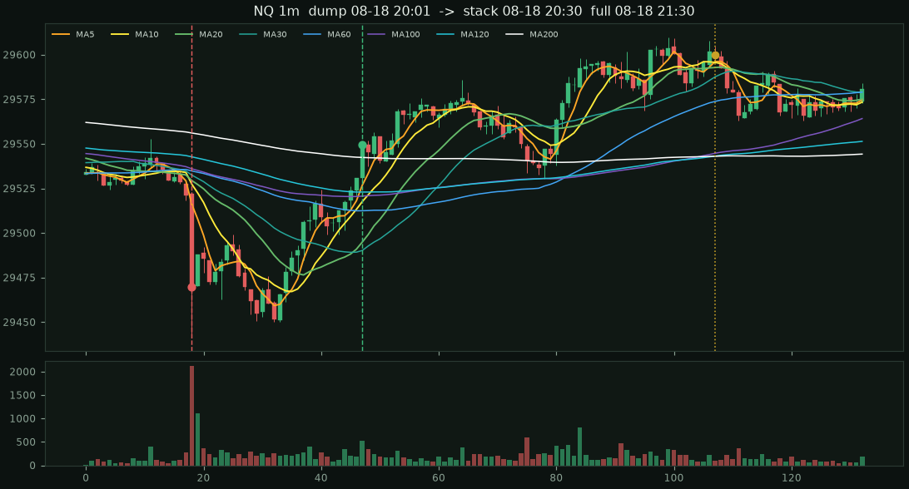
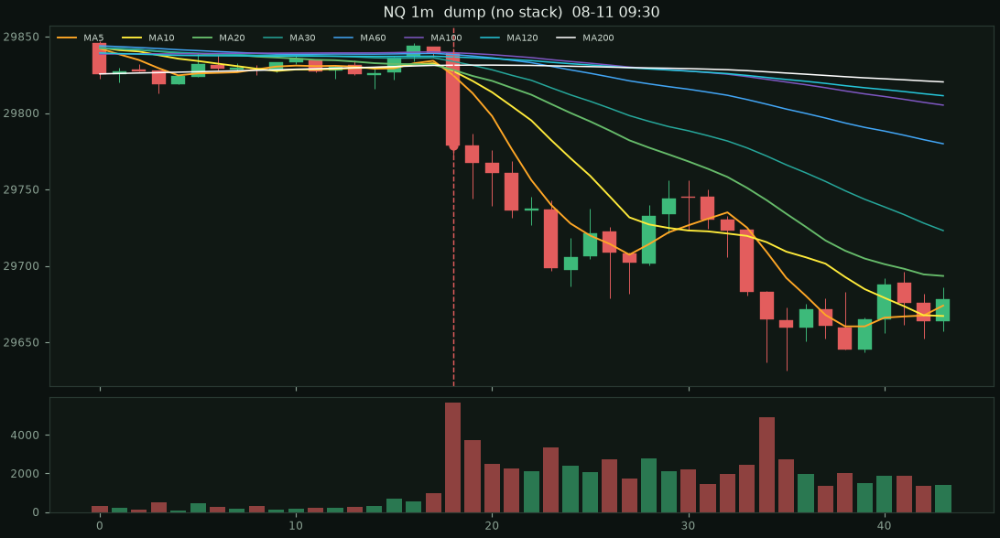
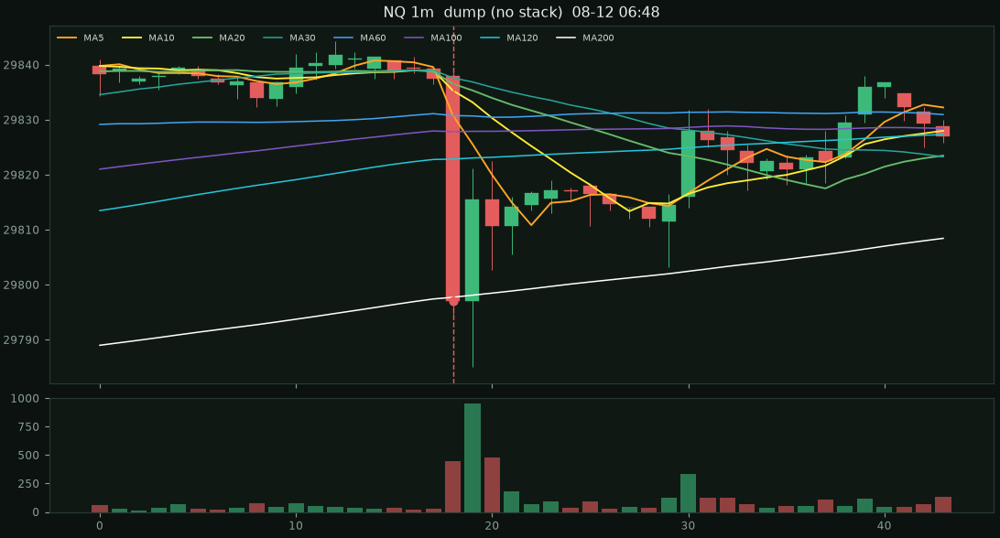
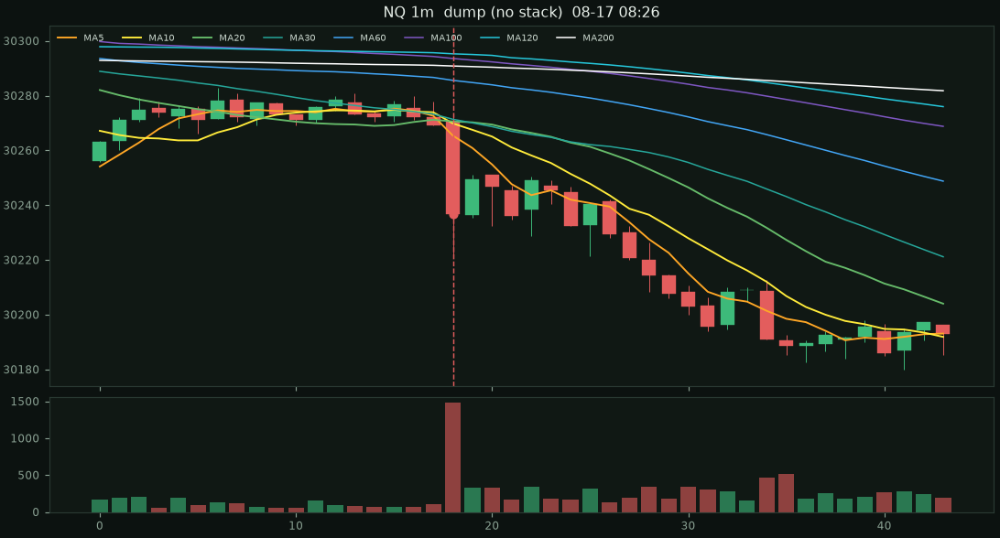

NQ=F · 2026-08-11 ~ 2026-08-18 · 8160 根 1m
（2026-08-11 00:09 ~ 2026-08-18 22:59 ET）。
兩件事都要：先有爆量長陰打穿均線，90 分鐘內不破低，再走出多頭排列。
紅虛線是急跌，綠虛線是短均 5>10>20 且價站上全部均線，金虛線是八條完整打開。
| 條件 | 急跌 | 未破低 | 短均 5>10>20 | 接到 MA60 | 完整八條 |
|---|---|---|---|---|---|
| 嚴格急跌（5×ATR 或 50 點、5×量、跌破全部均線） | 4 | 1 | 1 | 1 | 1 |
| 中等急跌 | 17 | 2 | 2 | 2 | 2 |
| 寬鬆急跌 | 36 | 4 | 3 | 3 | 3 |
| 只看均線、不看急跌（30 分鐘去重） | — | — | 114 | 77 | 40 |
只看排列一週有 40 筆完整打開；加上急跌之後，嚴格條件只剩截圖那一筆。

急跌 81.0 點 · 量比 10.0× · ATR 7.4×
短均進場 29549.50 · 200>5>120>100>10>60>20>30
進場後 15/30/60m：+23.2pt / -13.0pt / +50.5pt
有砸、有量，但 90 分鐘內破低或均線沒排成多頭。

急跌 71.2 點 · 量比 9.7× · ATR 5.5× · 90 分鐘內破低或均線沒排成多頭

急跌 45.0 點 · 量比 7.2× · ATR 7.8× · 90 分鐘內破低或均線沒排成多頭

急跌 52.0 點 · 量比 8.3× · ATR 5.2× · 90 分鐘內破低或均線沒排成多頭